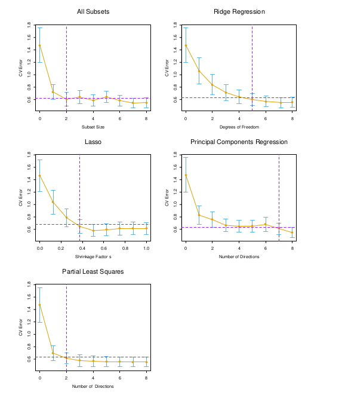
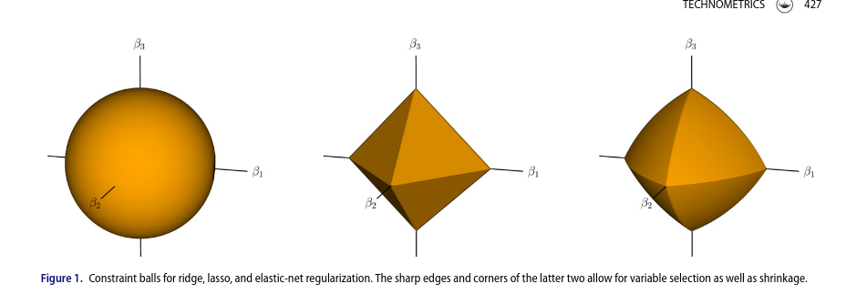

Jović, A., K. Brkić, and N. Bogunović. 2015. “A Review of Feature Selection Methods with Applications.” In 2015 38th InternationalConvention on Information and CommunicationTechnology, Electronics and Microelectronics (MIPRO), 1200–1205. https://doi.org/10.1109/MIPRO.2015.7160458.
similar to stepwise forward, but no estimation done (compute mutual information)
greedy
general, low-cost
wrappers: applied around specific methods
e.g. stepwise regression
general, evaluates prediction
embedded methods: integrate estimation and selection
e.g. lasso etc.
most efficient? can combine shrinkage and selection
Peng, Hanchuan, Fuhui Long, and C. Ding. 2005. “Feature Selection Based on Mutual Information Criteria of Max-Dependency, Max-Relevance, and Min-Redundancy.”IEEE Transactions on Pattern Analysis and Machine Intelligence 27 (8): 1226–38. https://doi.org/10.1109/TPAMI.2005.159.
stepwise abuse
stepwise regression for prediction may be fine (Murtaugh 2009)
selection based on AIC etc. more sensible than with p-values
note \(\Delta AIC \propto p-\textrm{value}\), if using columnwise/1-df steps
$ AIC = 0 p = 0.16 $
leave-one-out cross-validation (LOOCV) asymptotically equiv. to AIC (Stone (1977); but see CV)
for inference, terrible if done naively (but see Blanchet, Legendre, and Borcard (2008))
Stone, M. 1977. “An AsymptoticEquivalence of Choice of Model by Cross-Validation and Akaike’s Criterion.”Journal of the Royal Statistical Society. Series B (Methodological) 39 (1): 44–47. https://www.jstor.org/stable/2984877.
Blanchet, F. Guillaume, Pierre Legendre, and Daniel Borcard. 2008. “Forward Selection of ExplanatoryVariables.”Ecology 89 (9): 2623–32. https://doi.org/10.1890/07-0986.1.
POLLS
did you learn to do stepwise regression in a class? Were you warned about its limitations?
have you used stepwise regression? were you aware of its limitations at the time?
have you used SR “in real life”? for prediction or inference?
contrasts for categorical variables
expanding categorical variables to dummy variables
automatically handled by model.matrix() in R (StatsModels.jl:modelmatrix in Julia)
note\(p\) doesn’t include the constant term/intercept column
note unbiased estimate of the residual variance
MLE would give \(\textrm{RSS}/N\)
unbiased estimate of resid std. error divides by \(N-1.5\); minimum MSE (for Normal distribution) divides by \(N+1\) (!)
bias is scale-dependent (\(E(f(x)) \neq f(E(x))\) in general) and might not matter as much as you think
prostate cancer example
data exploration: pairs(., gap = 0) (can be extended with panel function); corrplot::corrplot.mixed(., lower="number", upper = "ellipse"); GGally::ggpairs(). Can use faraway::prostate.
## a bit of data explorationpp <- (prostate|>mutate(across(where(~length(unique(.))<=4), factor)))ggpairs(pp)corrplot::corrplot.mixed(cor(prostate), lower ='number', upper ='ellipse')
train/test error
hardly worth it for simple regression problems (measures like adjusted \(R^2\) and AIC(c) give reasonable estimates of out-of-sample error)
Gauss-Markov theorem
simple
applicable as long as data are independent and homoscedastic (iid is stronger)
MVUE (minimum-variance unbiased estimator)
but not necessarily minimum MSE!
regression by orthogonalization (3.2.3)
build up regression by successive orthogonalization
regress \(\mathbf x_j\) on residuals of all previous columns (\(\mathbf z_0, \mathbf z_1, \ldots, \mathbf z_j\)) to get coefficients \(\hat \gamma_{\ell j}\), residual \(\mathbf z_j\).
regress \(\mathbf y\) on \(\mathbf z_p\) to get \(\hat \beta_p\)
if \(\mathbf Z\) is the residual columns and \(\boldsymbol \Gamma\) is the (upper-triangular) matrix of \(\gamma_{\ell j}\), then \(\mathbf X= \mathbf Z\boldsymbol \Gamma\)
if \(\mathbf D= \textrm{Diag}(||\mathbf z_j||)\)
and \(\mathbf X= \mathbf Z\mathbf D^{-1}\mathbf D\boldsymbol \Gamma= \mathbf Q\mathbf R\) with \(\mathbf Q\) orthonormal, \(\mathbf R\) upper triangular
\(\to\) standard decomposition!
multiple outputs
somewhat niche problem …
changing \(\mathbf y\) to \(\mathbf Y\), \(\beta\) to \(\mathbf B\), the algebra mostly stays the same
separate coefficients for each problem
if homoscedastic, no need to consider correlation of observations!
return to subset/stepwise selection
still not sure it’s worth it
can update efficiently based on QR decomp
forward-stagewise: less efficient
digression: inefficiency as a virtue
improve bias-var tradeoff by worsening fit
early stopping, dropout, etc. etc.

ESL fig 3.7
shrinkage methods
ridge
L2 penalty on coefficients
predictors must be normalized! (scale of \(\beta_j\) depends on scale of \(x_j\))
equivalence between penalty (\(+ \lambda \sum \beta^2\)) and constraint (\(\sum \beta^2 \le t\))
(“one-to-one correspondence” between \(\lambda\) and \(t\), but not simple!)
add \(\lambda \mathbf I\) in the normal equations
works for non-full-rank problems
Bayesian analogue
analogous to setting iid Gaussian prior on individual \(\beta\) parameters
Friedman, Jerome, Trevor Hastie, and Rob Tibshirani. 2010. “Regularization Paths for GeneralizedLinearModels via CoordinateDescent.”Journal of Statistical Software 33 (1): 1–22. https://www.ncbi.nlm.nih.gov/pmc/articles/PMC2929880/.
ridge vs lasso vs best-subset vs elastic net

other penalties
could use \(L_p\) penalization with \(1 < p < 2\) (equivalent to a generalized normal or exponential power prior: \(\propto \exp\left(|(x-\mu)/s|^{p}\right)\) (gnorm package)